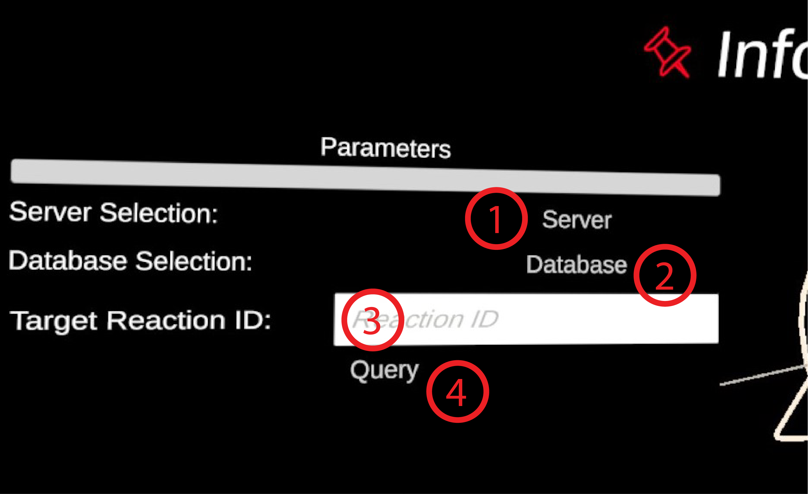

Reaction Info Query
Requires a connection to answer_talker.
This is the module that is used to query reaction information from remote database through answer_talker.
Panel Parameters
- Input Field Data Server IP. The IP address at which answer_talker is hosted. Default value is 127.0.0.1 but this only works during development if answer_talker is hosted on the same machine as the one we are developping ECellDive on.
- Input Field Data Server Port. The Port at which answer_talker is listening. Default value is 8000. This is also the default value when launching answer_talker so, unless you specified a port at that time, you can leave the field empty in ECellDive.
- Button Database. Will open a popup with a list of database you can chose from (as of v0.11.x-alpha Only BIGG and MetanetX are available).
- Input Field Target Reaction ID. Input here the SUID of the reaction for which you wish to obtain details from the target database.
- Button Query. Send the query to answer_talker that will translate it and sent it to remote database. If the query is successful, the module will flash green; an information tag will be added to the reaction describing the species involved. If the query fails, the module will flash red. In that case, you can check the error message in the log.